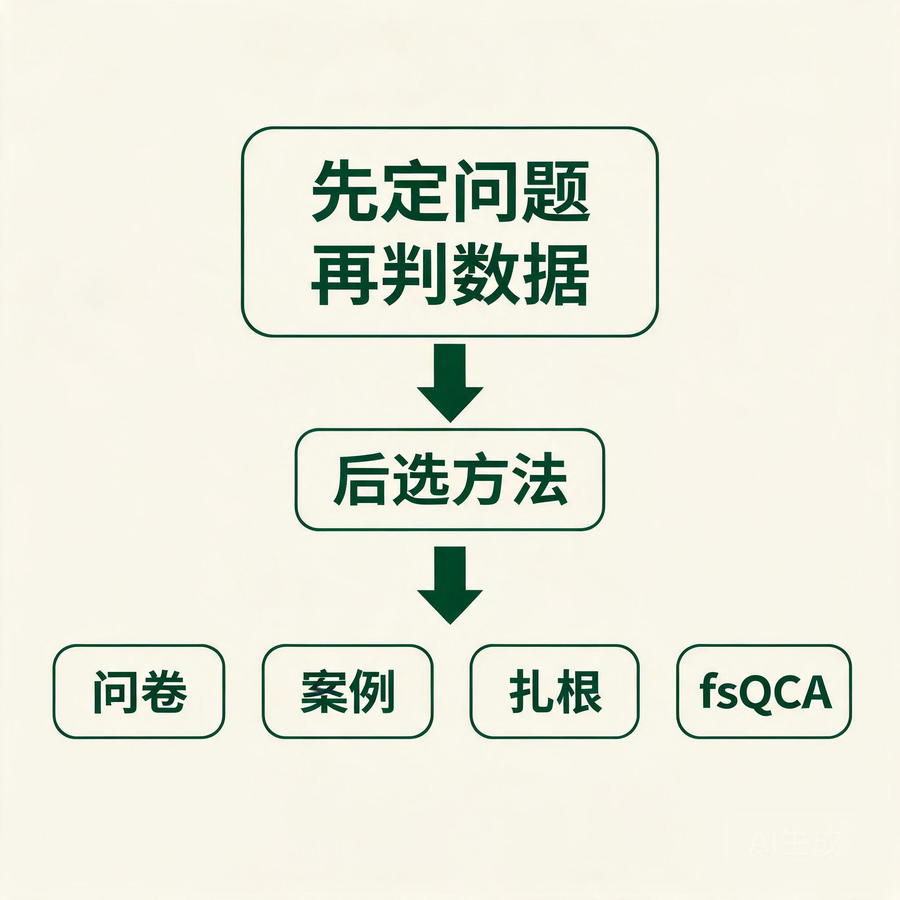
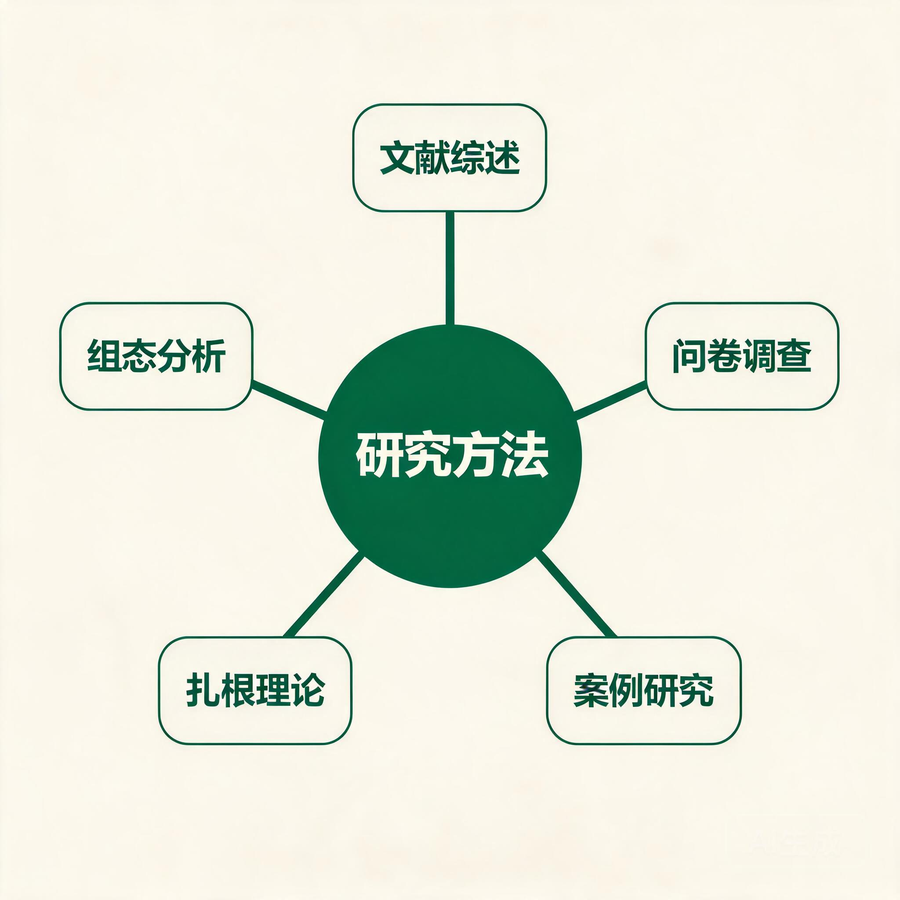

农村发展硕士论文核心研究方法指南
从研究问题、数据条件到方法组合的结构化选择
适用范围：农村发展、农村经济、乡村治理、农业经济管理、公共管理、区域发展、乡村社会学等方向的硕士论文。
一、研究方法选择的基本原则
农村发展研究涉及农户、村集体、基层政府、合作社、农业企业和社会组织等多类主体，也经常同时面对经济、社会、制度、空间和生态问题。方法选择不能从“哪种方法热门”出发，而应先确定研究问题，再判断数据和案例条件。
1. 先判断论文要回答哪类问题
1.1 描述性问题：是什么
常见问题：
- 某地区农户收入、土地流转或数字技术使用处于什么水平？
- 村集体经济的发展模式有哪些？
- 某项乡村政策在基层如何执行？
适合方法：描述统计、问卷调查、案例研究、政策文本分析、GIS 制图。
1.2 解释性问题：为什么
常见问题：
- 为什么部分村庄能够实现集体经济持续增长，而另一些村庄不能？
- 为什么数字平台建成后，农户参与率仍然较低？
- 为什么同一政策在不同乡镇产生不同结果？
适合方法：扎根理论、过程追踪、比较案例、回归分析、多层模型、社会网络分析。
1.3 因果识别问题：是否产生影响
常见问题：
- 数字乡村试点是否提高了农户收入？
- 农村电商政策是否促进了县域创业？
- 高标准农田建设是否提升了农业生产效率？
适合方法：双重差分法、倾向得分匹配、工具变量法、断点回归、随机实验、面板固定效应模型。
1.4 组态问题：哪些条件组合能够产生结果
常见问题：
- 哪些“党建、产业、人才、资源、治理”条件组合能够实现村集体经济高质量发展？
- 数字基础、干部能力、农户参与和政策支持如何共同形成高治理绩效？
适合方法：模糊集定性比较分析，即 fsQCA。
1.5 空间问题：在哪里、是否存在空间关联
常见问题：
- 农村数字化发展是否存在空间集聚？
- 邻近地区的乡村产业发展是否产生溢出效应？
- 公共服务可达性在村庄之间如何分布？
适合方法：GIS、空间统计、空间计量模型、地理加权回归。
1.6 评价与决策问题：发展水平或效率如何
常见问题：
- 如何构建乡村振兴、数字乡村或农村韧性评价指标体系？
- 哪些地区的农业投入产出效率较高？
- 不同发展方案的优先顺序是什么？
适合方法：熵权法、AHP、TOPSIS、主成分分析、因子分析、DEA、SFA、德尔菲法。
2. 方法选择的五项约束
- 研究问题：方法必须能够回答题目提出的问题。
- 数据类型：区分定量数据、访谈文本、政策文本、空间数据和案例过程材料。
- 样本规模：小样本、中等样本和大样本适合的方法不同。
- 因果要求：描述相关性、解释机制和识别因果不能混为一谈。
- 研究能力：软件、统计基础、田野进入和时间成本应与硕士论文周期匹配。
3. 农村发展研究方法总览
| 研究任务 | 推荐方法 | 常见数据 | 典型成果 |
|---|---|---|---|
| 探索新概念与机制 | 扎根理论、深度访谈、参与式观察 | 访谈、观察记录、文件 | 范畴体系、机制模型 |
| 分析多条件组合 | fsQCA、比较案例 | 20—100 个案例的条件与结果数据 | 多条等效组态路径 |
| 估计平均影响 | 回归、面板模型、DID、PSM、IV、RDD | 农户调查、统计年鉴、行政数据 | 净效应、因果效应 |
| 解释政策实施过程 | 案例研究、过程追踪、政策文本分析 | 政策、档案、访谈、事件资料 | 过程机制、执行链条 |
| 分析空间差异 | GIS、空间计量、GWR | 经纬度、遥感、区域统计 | 空间格局、溢出效应 |
| 评价水平与效率 | 熵权、AHP、TOPSIS、DEA、SFA | 指标数据、投入产出数据 | 综合指数、效率值、排序 |
| 分析主体关系 | 社会网络分析、多层模型 | 关系数据、个体与村级数据 | 网络结构、层级效应 |
| 强调村民参与 | PRA、参与式观察、行动研究 | 村民绘图、排序、会议和行动记录 | 社区需求、共创方案 |
| 提高证据完整性 | 混合研究 | 定量数据与质性材料 | 结果分布与机制解释 |
二、扎根理论
1. 方法定位
扎根理论是一种从经验材料中逐步形成概念、范畴和理论解释的质性研究方法。它适合研究理论积累不足、机制尚不清楚、主体经验复杂的问题。
扎根理论不是把访谈内容分类后换成学术词语，也不是先确定结论再寻找原话。它强调资料收集、编码、比较、备忘录和理论抽样之间的反复循环。
2. 适合回答的农村发展问题
- 农村数字化转型的基层阻力如何形成？
- 村干部、农户和企业如何共同推动村集体经济发展？
- 农户为什么采纳或拒绝某项农业技术？
- 返乡创业者如何获取资源并嵌入乡村社会？
- 农村互助养老的运行机制是什么？
- 乡村治理中的信任、协商和动员如何形成？
3. 适用条件
- 研究问题以“如何形成”“为什么发生”“有哪些过程和机制”为主。
- 已有理论不足以完整解释研究现象。
- 研究者能够进入田野并持续收集材料。
- 受访对象具有多样性，能够提供不同立场和经历。
- 研究者愿意保留与原预期不一致的材料。
4. 资料来源
- 半结构化访谈和深度访谈。
- 焦点小组。
- 参与式观察和田野笔记。
- 村庄档案、会议记录和工作台账。
- 政策文件、新闻材料和平台记录。
- 微信群讨论、公开留言等数字材料，但需遵守研究伦理。
多来源材料有助于验证受访者陈述，降低只依赖单一访谈的偏差。
5. 核心实施步骤
5.1 明确初始研究问题
初始问题应保持开放。例如：“村集体经济发展中的多主体协作是如何形成的？”不宜一开始就限定为“财政支持通过干部能力提升推动集体经济发展”。
5.2 初始抽样
先选择能够提供丰富信息的受访者。农村发展研究可以覆盖：
- 县级和乡镇管理人员。
- 村“两委”干部和集体经济组织负责人。
- 普通农户、低收入农户和外出务工农户。
- 合作社、农业企业和技术服务商。
- 驻村干部、社会组织和乡贤。
5.3 资料收集与转写
- 取得知情同意。
- 记录访谈时间、地点、身份和情境。
- 尽可能录音并逐字转写。
- 使用匿名编号替代真实姓名和村名。
- 访谈后立即补充田野备忘录。
5.4 开放式编码
逐句或逐段分析材料，提取贴近原始语义的概念。
示例原话：“平台建好了，但是村里的老人不知道从哪里点进去，看到财务表也看不懂。”
可形成的初始概念：
- 平台入口认知不足。
- 老年农户操作困难。
- 公示内容专业化。
- 技术建设与使用能力脱节。
5.5 主轴编码
比较初始概念之间的关系，将其归入更高层次范畴。
上述概念可归入：
- 农户数字素养不足。
- 平台功能适配性较弱。
- 数字技术供需错配。
主轴编码应关注条件、行动、互动、结果和情境，而不是只做词语合并。
5.6 选择性编码
识别能够统领其他范畴的核心范畴，并形成解释主线。
示例核心范畴：农村数字治理的“技术供给—主体能力—制度协同”适配机制。
可以形成如下解释：只有平台供给、农户能力和制度协同相互匹配时，数字技术才会转化为实际治理绩效。
5.7 持续比较
持续比较包括：
- 同一受访者不同表述之间的比较。
- 不同主体之间的比较。
- 不同村庄之间的比较。
- 新材料与既有编码之间的比较。
- 支持材料与反例之间的比较。
5.8 理论抽样
编码出现新问题后，有针对性地补充受访对象。
例如，前期访谈发现“乡镇技术支持不足”是重要范畴，后续可专门访谈乡镇平台管理员和技术公司人员，而不是继续机械增加同类农户。
5.9 理论饱和度检验
预留部分访谈材料，检验是否出现新的概念、范畴和关系。论文应说明：
- 预留了多少材料。
- 检验产生了什么结果。
- 为什么判断核心范畴已经稳定。
6. 研究结果的标准呈现
建议保持以下证据链：
原始语句 → 初始概念 → 主范畴 → 核心范畴 → 范畴关系 → 理论模型
论文中通常包括：
- 访谈对象表。
- 开放式编码表。
- 主轴编码表。
- 选择性编码表。
- 饱和度检验表。
- 理论模型图。
- 核心范畴的文字解释。
7. 质量控制
- 可信度：使用原始引语、多主体材料和成员核验。
- 可依赖性：记录编码规则、材料版本和分析过程。
- 可确认性：保留反例，区分资料与研究者判断。
- 可转移性：详细说明案例情境和适用边界。
- 编码一致性：多人编码时说明分歧讨论和修订过程。
8. 软件工具
可使用 NVivo、MAXQDA、ATLAS.ti 等软件管理材料和编码。软件能够提高检索、标注和版本管理效率，但不会自动生成可信理论。
9. 常见误用
- 先确定四个问题，再把访谈内容分别放进去。
- 只有少量简短访谈，仍声称完成理论构建。
- 只展示编码表，没有原始语句和范畴关系。
- 把词频统计当成扎根理论。
- 编码编号和范畴名称前后不一致。
- 未进行理论抽样，却直接声称理论饱和。
- 使用既有理论严格限定全部题目和编码，同时声称研究完全没有理论预设。
- 构建了“理论模型”，但模型只是一张分类图，没有解释作用过程。
10. 适合的组合方法
- 扎根理论 + 问卷：先探索概念，再开发量表或检验分布。
- 扎根理论 + fsQCA：先识别关键条件，再分析条件组合。
- 扎根理论 + 案例比较：提炼共同机制和差异机制。
- 扎根理论 + 过程追踪：同时解释范畴关系和事件过程。
三、模糊集定性比较分析（fsQCA）
1. 方法定位
fsQCA 是基于集合论和布尔代数的组态分析方法。它不只估计单个因素的平均净效应，而是分析多个条件如何组合形成结果。
fsQCA 特别适合农村发展中的复杂因果问题，因为同一结果可能由多条不同路径产生。例如，村集体经济高质量发展既可能来自“资源禀赋好 + 产业能力强”，也可能来自“党建引领强 + 人才能力强 + 政策支持足”。
2. 核心思想
2.1 并发因果
一个条件通常需要与其他条件结合后才产生结果。
2.2 等效多路径
不同条件组合可能产生相同结果。
2.3 因果非对称
导致高绩效的条件组合，不一定是导致低绩效组合的简单反面。因此应分别分析结果出现和结果缺失。
2.4 集合隶属关系
案例对某个集合的隶属程度可以介于 0 和 1 之间。例如，一个村庄对“高数字基础”集合的隶属度可为 0.8，而不是简单分为高或低。
3. 适合回答的农村发展问题
- 哪些条件组合能够实现高水平乡村治理？
- 不同类型村庄通过哪些路径实现集体经济增长？
- 数字基础、人才、组织能力和政策支持如何形成数字乡村绩效？
- 哪些治理和资源条件能够增强农村社区韧性？
- 合作社成功是否存在多种组织和市场路径？
4. 样本规模与案例选择
- fsQCA 常用于中小样本研究，实践中常见 20—100 个案例，也可扩展到更大样本。
- 案例应具有可比性，并围绕同一研究问题选择。
- 不宜只选择成功案例，应保留结果差异。
- 条件数量通常控制在 4—7 个。条件过多会造成真值表组合快速增长和有限多样性。
- 条件选择应来自理论、文献或前期质性研究，不能完全由数据相关性决定。
5. 变量设计
5.1 结果条件
结果应清楚、可测量，并与题目一致。例如：
- 高水平村集体经济绩效。
- 高农户数字参与。
- 高农村社区韧性。
- 高政策执行效果。
5.2 前因条件
以数字乡村治理绩效为例，可选择：
- 数字基础设施。
- 村干部数字能力。
- 农户数字素养。
- 信息公开质量。
- 部门协同程度。
- 政策和资金支持。
条件应处于相近分析层次，并避免含义高度重叠。
6. 数据校准
校准是把原始数据转化为集合隶属度的过程，是 fsQCA 最关键的步骤之一。
6.1 直接校准法
设置三个锚点：
- 完全隶属点。
- 交叉点，即最大模糊点。
- 完全不隶属点。
锚点应优先依据理论标准、政策标准、样本分布和实质性知识确定。不能只因为软件方便，就机械使用最大值、中位数和最小值。
6.2 间接校准法
根据明确的质性标准，把案例赋值为若干隶属程度。例如：0、0.2、0.4、0.6、0.8、1。
6.3 校准说明
论文应列出：
- 原始指标。
- 数据来源。
- 三个锚点。
- 锚点依据。
- 校准后的分布检查。
7. 必要条件分析
必要条件分析判断某个条件是否几乎总是出现在结果中。
- 一致性通常达到 0.90 以上时，才考虑把该条件视为必要条件。
- 同时检查覆盖度，避免把普遍存在但解释力有限的条件误判为重要条件。
- 必要条件不等于充分条件，也不等于单独能够产生结果。
8. 真值表构建
真值表列出各种条件组合及其结果。
需要设定：
- 案例频数阈值。
- 一致性阈值。
- PRI 一致性阈值。
常见做法是将充分性一致性设为 0.80 或 0.85 以上，但具体标准应根据样本量、研究领域和数据分布决定。小样本频数阈值常设为 1，较大样本可提高到 2、3 或更高。
9. 组态解分析
软件通常给出：
- 复杂解。
- 简约解。
- 中间解。
研究中常结合简约解和中间解判断：
- 核心条件：在两类解中都出现。
- 边缘条件：只在中间解中出现。
常用符号：
*：并且。+：或者。~：条件缺失。→：该组态足以产生结果。
假设性示例：
数字基础 干部能力 信息公开 → 高治理绩效
政策支持 部门协同 农户参与 → 高治理绩效
这说明高治理绩效存在至少两条路径：技术能力路径和协同参与路径。
10. 组态命名与解释
组态不能只写条件符号，应结合案例和理论命名。例如：
- 技术—能力驱动型。
- 组织—协同驱动型。
- 政策补偿型。
- 资源—产业融合型。
每条路径应说明：
- 核心条件是什么。
- 哪些条件发挥替代或补偿作用。
- 哪些代表性案例符合该路径。
- 路径适用于什么类型村庄。
- 与已有理论和文献有什么关系。
11. 稳健性检验
可采用：
- 调整一致性阈值。
- 调整案例频数阈值。
- 修改校准锚点。
- 删除或替换单个条件。
- 检查特殊案例和矛盾组态。
- 分别分析高结果和非高结果。
稳健性检验关注核心路径是否保持稳定，而不是要求所有系数或覆盖度完全不变。
12. 软件工具
- fsQCA 软件。
- R 包
QCA、SetMethods。 - Stata 的相关用户命令可用于部分校准和辅助分析，但标准流程通常使用 fsQCA 或 R。
13. fsQCA 的优势
- 适合中小样本和复杂案例。
- 能揭示多条等效路径。
- 能处理因果非对称。
- 便于连接案例知识与跨案例比较。
- 适合分析农村发展中的资源、组织、政策和主体能力组合。
14. 局限与常见误用
- 条件选择缺乏理论依据，只根据相关性筛选变量。
- 校准锚点完全依赖样本分位数，没有实质解释。
- 条件过多、样本过少，导致大量未观察组合。
- 只报告软件输出，不分析代表性案例。
- 把充分组态表述为确定性因果关系。
- 忽视时间顺序和条件之间的动态变化。
- 不分析结果缺失，违背因果非对称思想。
- 用 fsQCA 替代所有回归分析，却没有说明研究目标为何是组态而不是平均净效应。
15. 适合的组合方法
- 扎根理论 + fsQCA：前者识别条件和机制，后者比较条件组合。
- 回归 + fsQCA：回归分析平均净效应，fsQCA 分析多路径和非对称性。
- 案例研究 + fsQCA：跨案例识别路径，案例内解释路径如何运行。
- 面板数据 + 动态 QCA：适合研究组态随时间变化，但方法要求更高。
四、其他适合农村发展硕士论文的方法
1. 案例研究
适合问题
- 某项改革如何在一个村庄或地区推进？
- 某个合作社、村集体或治理平台为什么成功或失败？
- 政策执行过程中的主体互动和制度变化是什么？
基本步骤
- 明确案例边界和研究问题。
- 说明选择该案例的理由。
- 收集访谈、档案、统计和观察等多来源材料。
- 建立事件时间线和证据链。
- 进行模式匹配、解释构建或跨案例比较。
优势
能够保留农村社会的制度、关系和地方情境，适合解释复杂过程。
风险
- 把案例介绍写成工作总结。
- 只使用宣传材料。
- 缺少反例和多来源验证。
- 从单一案例直接推广到全国。
2. 问卷调查与统计分析
适合问题
- 农户行为、态度、满意度和参与程度。
- 技术采纳、土地流转、信贷需求、返乡创业意愿。
- 不同群体之间的差异和变量关系。
核心要求
- 明确总体和抽样框。
- 题项来自理论和成熟量表。
- 开展预测试、信度和效度检查。
- 说明无效问卷和缺失值处理。
- 根据问题选择描述统计、差异检验、回归或结构方程。
风险
便利抽样、共同方法偏差、社会期许偏差和横截面因果解释过度。
3. 面板数据回归与固定效应模型
适合问题
- 县域数字化、财政支农、农业机械化与农民收入之间的关系。
- 多年区域数据中的变化趋势和影响因素。
数据
县、市、省或农户的多期数据。
基本模型
- 个体固定效应。
- 时间固定效应。
- 双向固定效应。
- 聚类稳健标准误。
风险
固定效应可以控制不随时间变化的遗漏因素，但不能自动解决反向因果和时变遗漏变量。
4. 双重差分法（DID）
适合问题
评估数字乡村试点、农村电商示范县、土地制度改革、高标准农田建设等政策效果。
核心条件
- 有明确处理组和对照组。
- 有政策实施前后数据。
- 平行趋势假设基本成立。
- 政策时点和影响范围清楚。
关键检验
- 平行趋势。
- 动态效应。
- 安慰剂检验。
- 替换样本和指标。
- 异质性分析。
- 分期实施政策应采用适合的多期 DID 方法。
风险
只运行一个交互项回归而不检验平行趋势，或忽视政策选择性和同期其他政策。
5. 倾向得分匹配（PSM）与 PSM-DID
适合问题
处理组与对照组在可观察特征上差异较大时，提高样本可比性。
基本步骤
- 估计接受政策或项目的概率。
- 检查共同支撑区间。
- 采用近邻、半径或核匹配。
- 进行平衡性检验。
- 估计处理效应。
局限
PSM 只能平衡可观察变量，不能解决不可观察因素造成的选择偏差。PSM-DID 也不能替代平行趋势检验。
6. 工具变量法（IV）
适合问题
研究中存在反向因果、遗漏变量或测量误差时，用外生工具变量识别影响。
工具变量要求
- 相关性：工具变量显著影响内生解释变量。
- 外生性：工具变量不通过其他路径直接影响结果。
风险
农村研究中常见的历史、地理或距离变量并不天然外生。论文必须充分论证排除限制，并报告弱工具变量检验。
7. 断点回归（RDD）
适合问题
政策资格由明确阈值决定，例如收入、人口、评分或行政等级达到某个临界值后获得项目支持。
关键要求
- 阈值规则不能被主体精确操纵。
- 阈值附近案例具有可比性。
- 检查密度、协变量连续性和带宽敏感性。
局限
主要识别阈值附近的局部效应，外部推广需谨慎。
8. 多层线性模型
适合问题
农户嵌套在村庄、村庄嵌套在乡镇的分层数据。例如，农户参与既受个人教育影响，也受村庄治理和基础设施影响。
优势
能够区分个体层和村庄层效应，避免忽略组内相关性。
风险
需要足够的上层单位数量；跨层变量和交互项必须有理论依据。
9. 结构方程模型（SEM）
适合问题
研究数字素养、信任、感知易用性、参与意愿等潜变量之间的直接、间接和中介关系。
核心步骤
- 量表开发或选择。
- 信度与效度检验。
- 测量模型检验。
- 结构模型和路径检验。
- 中介、调节或多组比较。
风险
样本量不足、量表来源不清、模型拟合优度选择性报告，以及把横截面路径称为确定因果。
10. GIS 与空间计量分析
适合问题
- 农村公共服务、产业、人口和数字基础的空间分布。
- 乡村发展是否存在集聚和邻近溢出。
- 不同地区影响因素是否存在空间异质性。
常用方法
- 空间可视化和缓冲区分析。
- 全局与局部 Moran's I。
- 空间滞后模型、空间误差模型、空间杜宾模型。
- 地理加权回归。
- 遥感土地利用和夜间灯光数据分析。
风险
空间权重矩阵选择缺乏依据，忽视尺度效应，以及把地图相关性直接解释为因果。
11. 社会网络分析（SNA）
适合问题
- 村庄治理主体之间如何传递信息和资源？
- 合作社、农户与企业之间的关系结构如何影响绩效？
- 乡村精英或基层组织在网络中承担什么角色？
常用指标
- 网络密度。
- 度中心性、中介中心性和接近中心性。
- 结构洞。
- 核心—边缘结构。
- 社群划分。
风险
关系边界定义不清、遗漏关键节点、把网络位置与因果影响混同。
12. 参与式农村评估（PRA）
适合问题
- 村民如何定义本地发展问题？
- 不同群体对资源、风险和项目优先级有何判断？
- 如何让农户参与规划和方案设计？
常用工具
- 村庄资源图。
- 季节历。
- 历史时间线。
- 财富排序。
- 问题树和目标树。
- 利益相关者分析。
- 小组排序和社区会议。
优势
能够发现正式统计和干部访谈难以呈现的社区知识与弱势群体需求。
风险
会议被少数精英主导，参与流于形式，研究者承诺超出实际能力。
13. 政策文本分析与内容分析
适合问题
- 某项农村政策的目标、工具和演进逻辑。
- 中央与地方政策是否一致。
- 不同地区政策关注重点有何差异。
方法
- 人工编码。
- 内容分析。
- 政策工具分类。
- 主题模型和关键词共现。
- 语义网络分析。
风险
只统计词频而不解释制度含义，或把政策表达等同于实际执行。
14. 过程追踪
适合问题
解释某项政策、改革或村庄转型通过哪些关键事件和机制产生结果。
基本步骤
- 提出机制假设。
- 建立事件时间线。
- 寻找各机制环节的证据。
- 比较竞争性解释。
- 识别关键转折点和反事实可能。
风险
只按年份叙述事件，没有检验机制；只选择支持作者解释的材料。
15. 德尔菲法、AHP、熵权法与 TOPSIS
适合问题
构建乡村振兴、数字乡村、农村韧性或公共服务评价指标体系。
方法分工
- 德尔菲法：通过多轮专家咨询筛选和修订指标。
- AHP：依据专家两两判断形成主观权重。
- 熵权法：依据指标差异程度形成客观权重。
- TOPSIS：计算各评价对象与理想方案的接近程度并排序。
风险
- 指标体系缺乏理论依据。
- 专家选择不透明。
- 把“客观赋权”理解为完全没有研究者判断。
- 综合指数很精确，但原始数据质量较差。
16. DEA 与 SFA
适合问题
- 农业生产效率。
- 村集体经济投入产出效率。
- 农村公共服务供给效率。
- 绿色农业和资源利用效率。
方法区别
- DEA 是非参数方法，不预设生产函数，适合多投入、多产出。
- SFA 是参数方法，区分随机扰动和无效率项，但需要设定函数形式和分布假设。
风险
投入产出指标选择不当、决策单元数量不足、忽视环境变量，以及把相对效率解释为绝对绩效。
17. 实验与随机对照试验
适合问题
- 信息提醒是否提高农业保险购买率。
- 培训方式是否改善农户数字技能。
- 不同政策信息框架是否影响参与意愿。
类型
- 田野实验。
- 调查实验。
- 随机对照试验。
- 列表实验和选择实验。
风险
伦理审批不足、样本流失、干预污染、执行偏差和外部效度有限。
18. 混合研究方法
适合问题
需要同时回答“总体上发生了什么”和“为什么发生”时，可组合定量和质性方法。
常见设计
探索式顺序设计
先访谈或扎根理论，后开发问卷或进行 fsQCA、回归分析。
解释式顺序设计
先进行问卷或计量分析，再通过访谈解释异常结果和作用机制。
并行设计
定量和质性材料同期收集，分别分析后进行对照和整合。
关键要求
混合研究不是简单使用两种方法，而要说明两类证据在研究问题、样本、分析和结论中如何整合。
五、方法选择与组合建议
1. 按研究问题选择
| 研究问题 | 首选方法 | 可搭配方法 |
|---|---|---|
| 新现象的概念和机制不清楚 | 扎根理论 | 案例研究、参与观察 |
| 多个条件如何共同产生结果 | fsQCA | 扎根理论、案例比较 |
| 政策是否产生平均影响 | DID、IV、RDD | PSM、事件研究、访谈 |
| 农户态度和行为受哪些因素影响 | 问卷、回归、SEM | 访谈、实验 |
| 政策执行过程为何出现偏差 | 案例研究、过程追踪 | 政策文本分析、访谈 |
| 发展水平和空间格局如何 | 指标评价、GIS | 空间计量、案例解释 |
| 个体和村庄因素如何共同作用 | 多层模型 | 问卷、村级统计 |
| 主体关系如何影响资源流动 | 社会网络分析 | 案例研究、访谈 |
| 村民真实需求和优先事项是什么 | PRA | 焦点小组、问卷 |
2. 推荐的硕士论文方法组合
2.1 扎根理论 + fsQCA
适合理论不足但拥有 20 个以上可比较案例的研究。
流程：访谈识别条件 → 理论和文献修订条件 → 案例赋值与校准 → fsQCA 识别路径 → 回到典型案例解释路径。
2.2 问卷 + 访谈
适合研究农户认知、行为和政策评价。
流程：问卷说明分布和差异 → 访谈解释原因与过程 → 对照不一致结果。
2.3 回归 + fsQCA
适合同时关注平均净效应和多条件组合。
流程：回归识别变量总体关系 → fsQCA 识别等效路径 → 比较对称与非对称结论。
2.4 DID + 案例研究
适合政策评估。
流程：DID 估计政策效果 → 选择高效和低效案例 → 解释实施机制和地区差异。
2.5 GIS + 空间计量 + 访谈
适合区域发展和公共服务研究。
流程：GIS 展示格局 → 空间模型估计关联和溢出 → 访谈解释空间差异。
2.6 指标评价 + 障碍度分析 + 案例比较
适合构建县域或村域发展指数，但应避免只做排名。评价后还需解释主要障碍和典型地区差异。
3. 不建议的机械组合
- 为增加方法数量，同时使用回归、SEM、fsQCA、AHP 和案例研究，但没有统一研究问题。
- 样本很小却建立复杂结构方程模型。
- 只有单年横截面数据却使用 DID。
- 没有明确政策阈值却使用 RDD。
- 只有 8—10 个相似案例，却设置 8 个 fsQCA 条件。
- 访谈材料不足，却声称完成扎根理论构建。
- 先完成指标排名，再添加几段访谈作为“混合研究”。
六、研究方法章节的推荐写作结构
1. 研究设计总述
- 研究问题。
- 研究范式和总体思路。
- 为什么选择这些方法。
- 各方法之间的分工和顺序。
2. 研究对象与样本
- 研究区域或案例边界。
- 案例选择依据。
- 总体、抽样框和抽样方法。
- 样本数量和分布。
3. 数据来源
- 一手问卷。
- 深度访谈。
- 政策和档案。
- 统计年鉴和行政数据。
- 遥感和空间数据。
- 平台行为数据。
4. 变量、条件或编码设计
- 定量变量的定义和测量。
- fsQCA 条件和结果选择。
- 质性访谈提纲和编码框架。
- 指标体系和权重方法。
5. 分析步骤
按实际执行顺序说明，不要只列软件名称。
6. 质量与稳健性
- 问卷信效度。
- 回归稳健性与内生性。
- fsQCA 校准和阈值敏感性。
- 扎根理论饱和度和编码一致性。
- 案例研究的多来源验证。
7. 研究伦理和数据管理
- 知情同意。
- 匿名与保密。
- 数据保存和访问权限。
- 可复核的清洗、编码和分析记录。
七、方法选择自查清单
1. 研究问题
- [ ] 已区分描述、解释、因果、组态、空间和评价问题。
- [ ] 方法能够直接回答题目中的核心问题。
- [ ] 研究结论不会超过方法的识别能力。
2. 数据与样本
- [ ] 数据来源真实、可获得并符合伦理要求。
- [ ] 样本量与所选方法匹配。
- [ ] 案例具有差异性和可比性。
- [ ] 时间、空间和主体边界已经明确。
3. 扎根理论
- [ ] 访谈材料足够丰富并覆盖多类主体。
- [ ] 保留原始语句、概念和范畴的对应关系。
- [ ] 开展持续比较和理论抽样。
- [ ] 饱和度检验有明确材料和判断依据。
- [ ] 理论模型解释了过程，而不只是分类。
4. fsQCA
- [ ] 条件选择有理论和案例依据。
- [ ] 条件数量与案例数量匹配。
- [ ] 校准锚点具有实质解释。
- [ ] 同时报告必要性和充分性分析。
- [ ] 分析了高结果和非高结果。
- [ ] 对组态进行案例解释和稳健性检验。
5. 计量与评价方法
- [ ] 回归模型与变量类型匹配。
- [ ] 因果识别假设得到检验。
- [ ] 指标体系有理论依据。
- [ ] 权重和阈值不是为获得预期结果而调整。
- [ ] 空间分析说明权重矩阵和尺度选择。
6. 方法组合
- [ ] 每种方法承担不同任务。
- [ ] 不同材料和结果得到真正整合。
- [ ] 方法数量没有超过论文篇幅和研究能力。
- [ ] 对不一致结果进行了说明。
八、推荐学习顺序
对于农村发展硕士研究生，可按以下顺序建立方法能力：
- 文献检索、研究问题和案例选择。
- 问卷设计、访谈和描述统计。
- 回归分析和面板数据基础。
- 案例研究、质性编码和扎根理论。
- 因果识别方法，如 DID、PSM、IV 和 RDD。
- fsQCA 与组态思维。
- GIS、空间计量、多层模型或社会网络等专业方法。
- 混合研究设计和多方法证据整合。
方法学习的目标不是掌握更多软件，而是能够解释每一步为什么这样做、需要什么假设、结果能够支持什么结论。
九、经典方法文献建议
1. 扎根理论
- Glaser, B. G., & Strauss, A. L. The Discovery of Grounded Theory.
- Strauss, A., & Corbin, J. Basics of Qualitative Research.
- Charmaz, K. Constructing Grounded Theory.
2. fsQCA 与组态分析
- Ragin, C. C. Redesigning Social Inquiry: Fuzzy Sets and Beyond.
- Schneider, C. Q., & Wagemann, C. Set-Theoretic Methods for the Social Sciences.
- Fiss, P. C. “Building Better Causal Theories: A Fuzzy Set Approach to Typologies in Organization Research.”
3. 案例与混合研究
- Yin, R. K. Case Study Research and Applications.
- Creswell, J. W., & Plano Clark, V. L. Designing and Conducting Mixed Methods Research.
4. 因果识别与计量方法
- Angrist, J. D., & Pischke, J.-S. Mostly Harmless Econometrics.
- Cunningham, S. Causal Inference: The Mixtape.
实际写作时，应同时查阅本学科的中文方法教材、目标期刊方法规范，以及与具体研究主题直接相关的高质量实证论文。
